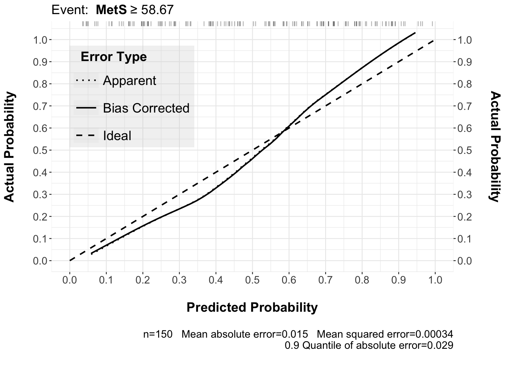
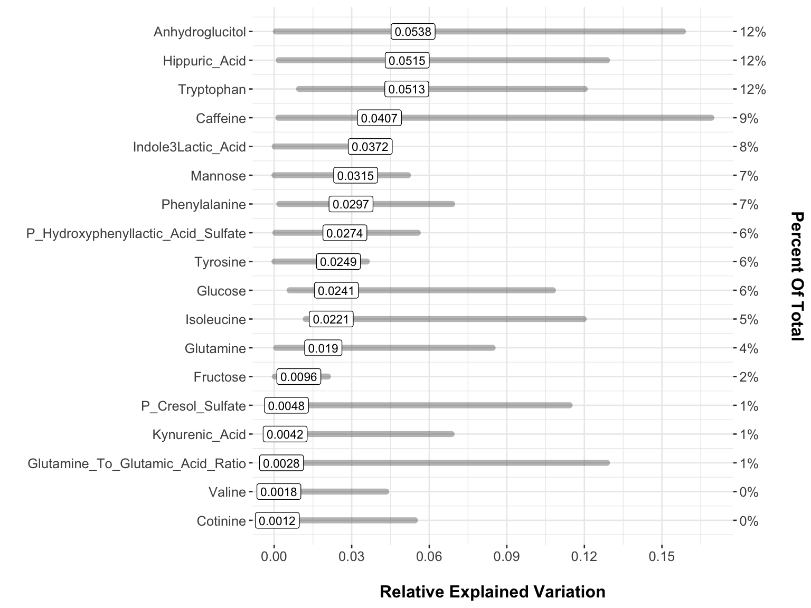
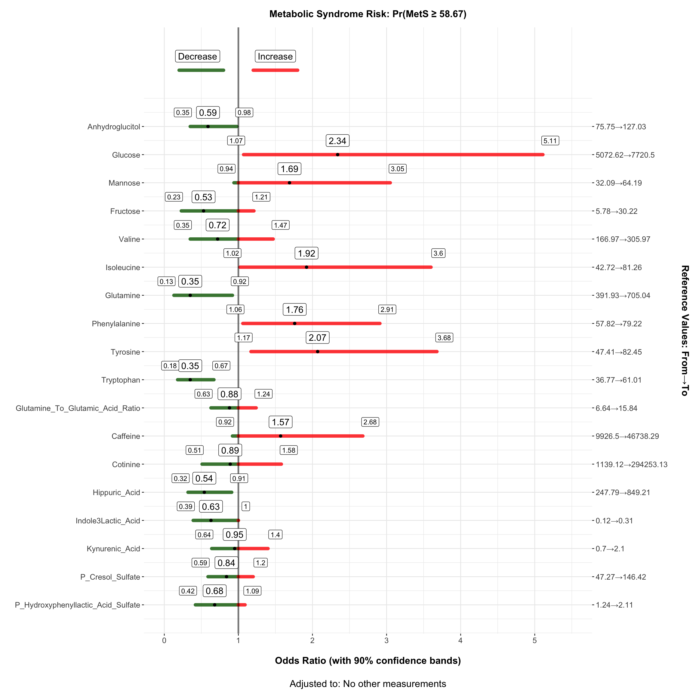

| row | varName | df | pval_partialR2 | varTransform | rowname | REV | Lower | Upper | FDR_pval_partialR2 |
|---|---|---|---|---|---|---|---|---|---|
| 1 | Butyrylcarnitine | 19.6034 | 0.5271 | rcs | xAcylCar | 0.0139 | 0.0032 | 0.1405 | 0.9197 |
| 2 | Valerylcarnitine | 19.5429 | 0.4004 | rcs | xAcylCar | 0.0254 | 0.0023 | 0.1126 | 0.9197 |
Modeling & Assessing Metabolite Added Value - Priority to AAS
1 Intro
Here we use the same modeling approach as in the Modeling & Assessing Metabolite Added Value but with giving first priority to the Amino Acid & Sugars i.e. AAS metabolite data.
Amino Acids & Sugars Data
Model Fit
No LRT procedure is applied. All variables enter the model.
AcylCarnitines
rexVar
Results: No AcylCarnitine has been chosen as both the average rexVar statistic and its lower interval bound are very close to zero.
Urine Hydrophilic Interaction Liquid Chromatography (HILIC) Data
rexVar
Results: Using an upper bound of rexVar > 10% and a lower Bound of rexVar> 1%
| row | varName | df | pval_partialR2 | varTransform | rowname | REV | Lower | Upper | FDR_pval_partialR2 |
|---|---|---|---|---|---|---|---|---|---|
| 1 | Caffeine | 19.6022 | 0.4546 | rcs | xHilic | 0.0411 | 0.0132 | 0.2136 | 0.8714 |
| 2 | Cotinine | 21.1470 | 0.0260 | rcs | xHilic | 0.0532 | 0.0210 | 0.1417 | 0.3089 |
Urine Tyrosine–Tryptophan Pathway Data
rexVar
Results: Using an upper bound of rexVar > 10% and a lower Bound of rexVar> 1% OR a central rexVar value being > 10%
| row | varName | df | pval_partialR2 | varTransform | rowname | REV | Lower | Upper | FDR_pval_partialR2 |
|---|---|---|---|---|---|---|---|---|---|
| 2 | Indole3Lactic_Acid | 24.6470 | 0.1503 | rcs | xTyroTrypto | 0.1211 | 0.0066 | 0.1397 | 0.2818 |
| 1 | Hippuric_Acid | 22.9821 | 0.0510 | rcs | xTyroTrypto | 0.1121 | 0.0077 | 0.1496 | 0.2085 |
| 5 | P_Hydroxyphenyllactic_Acid_Sulfate | 20.9482 | 0.1066 | rcs | xTyroTrypto | 0.1006 | 0.0022 | 0.1185 | 0.2498 |
| 3 | Kynurenic_Acid | 24.8343 | 0.3260 | rcs | xTyroTrypto | 0.0705 | 0.0145 | 0.1414 | 0.4258 |
| 4 | P_Cresol_Sulfate | 24.2514 | 0.1022 | rcs | xTyroTrypto | 0.0339 | 0.0121 | 0.1400 | 0.2498 |
Model Fit

MetS Index ≥ 58.67 and the actual observed frequency of that event with only metabolites in the model and with first priority the Amino Acids & Sugars measurements.
metabolites and with first priority the Amino Acids & Sugars.
| Index | Original Sample |
Training Sample |
Test Sample |
Optimism | Corrected Index |
Lower | Upper | Successful Resamples |
|---|---|---|---|---|---|---|---|---|
| Dxy | 0.4884 | 0.4911 | 0.4886 | 0.0025 | 0.4859 | 0.4753 | 0.4935 | 400 |
| R2 | 0.4236 | 0.4276 | 0.4727 | -0.0452 | 0.4687 | 0.4318 | 0.4947 | 400 |
| Intercept | 0 | 0 | 0.0117 | -0.0117 | 0.0117 | -0.0021 | 0.023 | 400 |
| Slope | 1 | 1 | 1.1843 | -0.1843 | 1.1843 | 1.1005 | 1.2514 | 400 |
| Emax | 0 | 0 | 0.0393 | -0.0393 | 0.0393 | 0.0217 | 0.0533 | 400 |
| D | 0.6252 | 0.5514 | 0.6334 | -0.082 | 0.7072 | 0.6399 | 0.7533 | 400 |
| U | -0.0133 | -0.0133 | -8.2502 | 8.2369 | -8.2502 | -8.277 | -8.2285 | 400 |
| Q | 0.6385 | 0.5647 | 8.8836 | -8.3189 | 8.9574 | 8.9131 | 8.9904 | 400 |
| B | 0.1697 | 0.17 | 0.1702 | -2e-04 | 0.1699 | 0.1693 | 0.1708 | 400 |
| g | 1.634 | 1.6521 | 1.9383 | -0.2862 | 1.9202 | 1.7442 | 2.0418 | 400 |
| gp | 0.3076 | 0.3088 | 0.3378 | -0.029 | 0.3366 | 0.3203 | 0.3488 | 400 |
See the validation results of the adjusted for other factors final model i.e. original for comparison, which is summarised here. The comparison is based on their Corrected Index values, which represent the best estimate of performance on new, independent data.
Model Comparison: Model Metabolites Only vs. Model Original
Which one discriminates better, and which one is better calibrated?
| Statistic | Model Metabolites Only | Model Original | Interpretation/Difference |
|---|---|---|---|
| Dxy (Discrimination) | 0.4859 | 0.5650 | Model Original is better. It has a higher Somers’ \(D_{xy}\) (closer to 1.0, further from 0.0), indicating better separation of outcomes. |
| R2 (Variance Explained) | 0.4687 | 0.5964 | Model Original is better. It explains a significantly higher proportion of the outcome variability. |
| Slope (Calibration) | 1.1843 | 1.4007 | Model Metabolites Only is better calibrated. Both models show underfitting (Slope > 1.0), but Model A’s slope (1.18) is closer to the ideal 1.0 than Model B’s (1.40). |
| Intercept (Calibration) | 0.0117 | 0.0217 | Model Metabolites Only is slightly better calibrated in-the-large, as its intercept is closer to the ideal 0.0. |
| Brier Score (Accuracy) | 0.1699 | 0.1397 | Model Original is better. It has a substantially lower Brier Score, indicating lower overall mean squared prediction error. |
1. Discrimination and Accuracy (Model Original Wins)
- Model Original clearly has superior discrimination (\(D_{xy}=0.5650\) vs. \(0.4859\)) and accuracy (Brier \(B=0.1397\) vs. \(0.1699\)).
- This means Model Original is much better at assigning a higher probability to positive outcomes and a lower probability to negative outcomes, and its predictions are generally closer to the true outcome value.
2. Calibration (Model Metabolites Only Wins, but both are Underfit)
- Model Metabolites Only is closer to perfect calibration (Slope \(\approx 1.0\)) than Model B.
- Both models exhibit underfitting (Slope \(> 1.0\)).
- Model Metabolites Only (Slope 1.1843): Its predictions are only slightly too modest and need a small degree of expansion.
- Model Original (Slope 1.4007): Its predictions are quite significantly too modest. The model is too cautious, and its predictions would need to be expanded by multiplying the original coefficients by \(1.40\) to achieve ideal calibration.
While Model Metabolites Only is slightly better calibrated (closer Slope to 1.0), Model Original’s superior discrimination and significantly lower Brier Score outweigh the minor calibration difference. In practical terms, Model Original is a much stronger predictor of the outcome.
Model Original is a stronger model that needs recalibration (likely by incorporating the \(\text{Slope}_{\text{Corrected}}\) of 1.4007 into future predictions or coefficient adjustments) to fully realize its predictive power.

MetS with only metabolites in the model and with first priority the Amino Acids & Sugars measurements.

MetS index with only metabolites in the model and with first priority the Amino Acids & Sugars measurements.